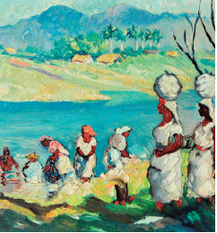
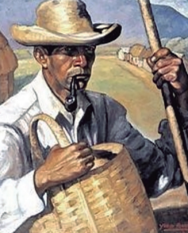

<!doctype html>
<html lang="es">
<head>
<link rel="stylesheet" type="text/css" href="base.css" />
<link rel="stylesheet" type="text/css" href="content.css" />
<link rel="stylesheet" type="text/css" href="nav.css" />
<meta http-equiv="content-type" content="text/html;  charset=utf-8" />
<title>Tema 3: Inventario visual, una mirada formal e iconográfica. | Educación Artística, 1° grado del nive secundario </title>
<link rel="shortcut icon" href="favicon.ico" type="image/x-icon" />
<meta name="author" content="Prof. Joe Mena" />
<meta name="generator" content="eXeLearning 2.9 - exelearning.net" />
<!--[if lt IE 9]><script type="text/javascript" src="exe_html5.js"></script><![endif]-->
<script type="text/javascript" src="exe_jquery.js"></script>
<script type="text/javascript" src="common_i18n.js"></script>
<script type="text/javascript" src="common.js"></script>
<meta name="viewport" content="width=device-width, initial-scale=1" />
</head>
<body class="exe-web-site" id="exe-node-5"><script type="text/javascript">document.body.className+=" js"</script>
<div id="content">
<p id="skipNav"><a href="#main" class="sr-av">Saltar la navegación</a></p>
<header id="header" ><div id="headerContent">Educación Artística, 1° grado del nive secundario</div></header>
<nav id="siteNav">
<ul>
   <li><a href="index.html" class="daddy main-node">EDUCACION ARTISTICA</a></li>
   <li class="current-page-parent"><a href="unidad_1_artes_visuales.html" class="current-page-parent daddy">UNIDAD 1, Artes Visuales</a>
   <ul>
      <li><a href="tema_1_pintando_la_vida_darle_forma_a_la_vida_a_travs_de__un_dibujo.html" class="no-ch">Tema 1: Pintando la vida. Darle forma a la vida a través de  un dibujo</a></li>
      <li><a href="tema_2_me_comunico_con_dibujos.html" class="no-ch">Tema 2: Me comunico con dibujos</a></li>
      <li id="active"><a href="tema_3_inventario_visual_una_mirada_formal_e_iconogrfica.html" class="active no-ch">Tema 3: Inventario visual, una mirada formal e iconográfica.</a></li>
      <li><a href="tema_4_crear_obras_de_arte_usando_la_tcnica_del_dibujo_y__del_uso_del_claroscuro.html" class="no-ch">Tema 4: Crear obras de arte usando la técnica del dibujo y  del uso del claroscuro</a></li>
      <li><a href="tema_5_la_mitad_de_mi_cara_en_escala_de_grises.html" class="no-ch">Tema 5: La mitad de mi cara en escala de grises</a></li>
      <li><a href="tema_6_prctica_de_textura_visual.html" class="no-ch">Tema 6: Práctica de textura visual</a></li>
      <li><a href="tema_7_descubriendo_colores_mgicos.html" class="no-ch">Tema 7: Descubriendo Colores Mágicos</a></li>
      <li><a href="tema_8_creando_un_crculo_cromtico.html" class="no-ch">Tema 8: Creando un círculo cromático</a></li>
   </ul>
   </li>
   <li><a href="unidad_2_artes_escnicas.html" class="daddy">UNIDAD 2: Artes Escénicas</a>
   <ul class="other-section">
      <li><a href="el_cuerpo_como_generador_de_movimiento.html" class="no-ch">El cuerpo como generador de movimiento</a></li>
      <li><a href="el_cuerpo_genera_lenguajes_artsticos_en_el_teatro_gestos_palabras_y_acciones.html" class="no-ch">El cuerpo genera lenguajes artísticos en el teatro: gestos, palabras y acciones</a></li>
   </ul>
   </li>
   <li><a href="unidad_3_educacin_musical.html" class="daddy">UNIDAD 3: Educación Musical</a>
   <ul class="other-section">
      <li><a href="seccin_las_primeras_notas.html" class="no-ch">Sección: Las primeras notas</a></li>
      <li><a href="seccin_melodas_frases_semifrases_y_motivo.html" class="no-ch">Sección: Melodías, frases, semifrases y motivo</a></li>
      <li><a href="seccin_con_mi_flauta_repite_despus_de_mi.html" class="no-ch">Sección: Con mi flauta, repite después de mi</a></li>
      <li><a href="seccin_preparemos_el_edificio.html" class="no-ch">Sección: Preparemos el edificio</a></li>
   </ul>
   </li>
   <li><a href="unidad_4_artes_aplicadas.html" class="daddy">UNIDAD 4: Artes Aplicadas</a>
   <ul class="other-section">
      <li><a href="disea_tu_propio_cartel_visual.html" class="no-ch">Diseña tu propio cartel visual</a></li>
      <li><a href="diseo_textil.html" class="no-ch">Diseño textil</a></li>
      <li><a href="creo_y_diseo_mi_bolso_reciclado.html" class="no-ch">Creo y diseño mi bolso reciclado</a></li>
      <li><a href="crear_una_mueca_sin_rostro_de_papel_mach.html" class="no-ch">Crear una muñeca sin rostro de papel maché</a></li>
      <li><a href="diario_artstico.html" class="no-ch">Diario artístico</a></li>
   </ul>
   </li>
</ul>
</nav>
<div id='topPagination'>
<nav class="pagination noprt">
<a href="tema_2_me_comunico_con_dibujos.html" class="prev"><span><span>&laquo; </span>Anterior</span></a> <span class="sep">| </span><a href="tema_4_crear_obras_de_arte_usando_la_tcnica_del_dibujo_y__del_uso_del_claroscuro.html" class="next"><span>Siguiente<span> &raquo;</span></span></a>
</nav>
</div>
<div id="main-wrapper">
<section id="main">
<header id="nodeDecoration"><h1 id="nodeTitle">Tema 3: Inventario visual, una mirada formal e iconográfica.</h1></header>
<article class="iDevice_wrapper objectivesIdevice em_iDevice em_iDevice_objectives" id="id22">
<div class="iDevice emphasis1" >
<header class="iDevice_header"><h1 class="iDeviceTitle">Objetivo de lectura</h1></header>
<div class="iDevice_inner">
<div class="iDevice_content_wrapper">
<div id="ta22_133_2" class="block iDevice_content">
<p style="text-align: left;"><strong>Yoryi Morel, pintor nacional dominicano</strong><br />Yoryi Morel (Santiago de los Caballeros, 1906 - 1979) comenzó sus estudios de pintura a los once años con el pintor santiaguero Juan Bautista Gómez. Su primera exposición individual, realizada en Santo Domingo en 1932, causó un gran impacto en el público y desde entonces ha sido catalogado como el pintor costumbrista dominicano por excelencia.<br />En 1936 expuso en el Ateneo de Santo Domingo y en 1939 obtuvo la medalla de oro en la Exposición Internacional de San Francisco, Estados Unidos. En 1942 concurrió a la primera Bienal realizada en el país y en 1952 le fue otorgado el primer premio de la VI Bienal. En 2006 fue galardonado y nombrado como pintor nacional por el Congreso de la República Dominicana.</p>
<div class="exe-layout-2-cols exe-layout-2-50-50 exe-clear">
<div class="exe-col exe-col-1">
<figure class="exe-figure exe-image position-center license-custom" style="width: 242px;">
<figcaption class="figcaption"><em><span style="font-size: 10pt;">Lavanderas en el río, de Yoryi Morel, 1960</span></em></figcaption>
</figure>
</div>
<div class="exe-col exe-col-2">
<figure class="exe-figure exe-image position-center license-custom" style="width: 237px;">
<figcaption class="figcaption"><span style="font-size: 10pt;"><em>Campesino cibaeño, pintura de </em></span><br /><span style="font-size: 10pt;"><em>Yoryi Morel terminada el 1941</em></span></figcaption>
</figure>
</div>
</div>
<p>Este gran artista fundó la Escuela de Bellas Artes de su ciudad natal y durante muchos años se dedicó a la actividad docente en Santiago y en la capital. Sus enseñanzas influyeron en varias generaciones de artistas dominicanos contemporáneos.<br />La temática de la obra de Yoryi Morel privilegia el paisaje, sin dejar de lado la figura humana. Son destacables sus retratos de típos populares: el pescador, el buhonero, el campesino, el muchacho de la calle... En ellos plasma la tristeza resignada como un rasgo característico de la condición dominicana. <br /><em><span style="font-size: 10pt;">Fuente: Fernández, T. y Tamaro, E. «Biografia de Yoryi Morel». En Biografías y Vidas. </span></em><br /><em><span style="font-size: 10pt;">La enciclopedia biográfica en línea. Barcelona, España, 2004. https://www.biografiasyvidas.com/biografia/m/morel_yoryi.htm</span></em></p>
</div>
</div>
</div>
</div>
</article>
<article class="iDevice_wrapper FreeTextIdevice" id="id23">
<div class="iDevice emphasis0">
<div id="ta23_85" class="block iDevice_content">
<p><strong>■ ¿Qué vas a hacer?</strong><br />– Identificar los elementos formales presentes en una pintura.<br />– Atribuir un significado y hacer inferencias a las imágenes que se <br />muestran en obras pictóricas.<br /><strong>■ ¿Por qué lo vas a hacer?</strong> <br />Por la importancia de aprender a examinar y descomponer la información presente en una obra pictórica en diferentes secciones para <br />centrarse en los símbolos y signos.</p>
<p><strong>■ ¿Qué necesitas para hacerlo?</strong><br />– Una obra pictórica de tu preferencia tomada de la web, libros, periódicos o revistas, etc.<br />– Papel y lápiz para realizar el inventario visual.<br /><strong>■ ¿Cómo lo vas a hacer?</strong><br />– Utiliza una hoja de papel bond 8 ½ x 11 o un documento digital.<br />– Coloca una imagen que contenga una obra pictórica de tu preferencia. Es preferible trabajar con <br />una imagen full color.<br />– Identifica los elementos compositivos de la obra: equilibrio visual, armonía, ritmo y proporción.<br />– Completa el siguiente recuadro. Recuerda que es un ejercicio de percepción visual por lo cual, <br />encontrarás la información solicitada en tu pintura.<br />■ <strong>Reflexiona sobre lo que acabas de hacer</strong> <br />– ¿Consideras que puedes aplicar este ejercicio de análisis visual en otra área académica? ¿En cuál <br />área y por qué?<br />– Cuál es la importancia de realizar análisis semióticos de elementos visuales? Ejemplifica.</p>
</div>
</div>
</article>
<article class="iDevice_wrapper activityIdevice em_iDevice em_iDevice_activity" id="id24">
<div class="iDevice emphasis1" >
<header class="iDevice_header"><h1 class="iDeviceTitle">Actividad</h1></header>
<div class="iDevice_inner">
<div class="iDevice_content_wrapper">
<div id="ta24_135_2" class="block iDevice_content">
<p></p>
</div>
</div>
</div>
</div>
</article>
<div id="packageLicense" class="other-free-software">
<p><span>Licencia: </span> otras licencias de software libres</p>
</div>
</section>
</div>
<div id='bottomPagination'>
<nav class="pagination noprt">
<a href="tema_2_me_comunico_con_dibujos.html" class="prev"><span><span>&laquo; </span>Anterior</span></a> <span class="sep">| </span><a href="tema_4_crear_obras_de_arte_usando_la_tcnica_del_dibujo_y__del_uso_del_claroscuro.html" class="next"><span>Siguiente<span> &raquo;</span></span></a>
</nav>
</div>
</div>
<p id="made-with-eXe"><a href="https://exelearning.net/" target="_blank" rel="noopener"><span>Creado con eXeLearning<span> (Ventana nueva)</span></span></a></p><script type="text/javascript" src="_style_js.js"></script></body></html>